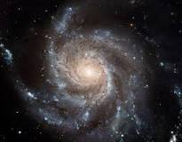

.png)
Galaxies are large collections of stars that are held together by mutual gravitation. They are also isolated from similar systems by great regions of space. There are three kinds: elliptical, spiral, and irregular galaxies. Each one is formed by varying processes that all contribute to their varying forms.
Spiral galaxies are twisted collections of stars, dust, and gas clouds. All together, they form a beautiful spiral that is mostly made up of young, hot stars. Unlike elliptical galaxies, spiral galaxies' stars have orbits that contribute to its overall twisting form.
They are formed by thousands of small spiral galaxies combining with each other. Through gravitational pull, they are able to become bigger. As the universe grew, more stars were created, and these combo galaxies gathered them as well, and even some from neighboring galaxies. With their increased size, they had more gravitational pull that helped them combine with each other. In modern times, these now huge spiral galaxies have collected thousands upon thousands of new blue stars that make up most of their system.
Elliptical galaxies have roundish shapes that stem from the close compaction of the stars they contain. Which is the exact opposite for spiral galaxies with their flattened distrubution. Elliptical galaxies occur more in rich clusters, containing a lot of members, than loose groups like spiral galaxies.
More often than not, elliptical galaxies are thought to be the result of merger of disk galaxies. Merger disk galaxies are when spiral galaxies merge, causing the stars in them to all have random orbits. Elliptical galaxies's stars have all randomized orbits, so there is no collective shape among them. Therefore, giving it it's rounded shape.
Irregular galaxies don't have any defined form or structure like elliptical or spiral galaxies. Instead, they have a chaotic appearance, an unorthodox collection of dust and young stars.
One way irregular galaxies are formed is when two galaxies collide, or come near one another. Causing their gravitational forces to interact. The other way is just when a young galaxy doesn't have a structure yet.
A star is an astronomical object comprising a luminous spheroid of plasma held together by self-gravity. The color of a star dictates how hot it is: blue is the hottest, followed by yellow, then red, the coldest. Ancient civilizations looked upon the stars and saw patterns among them, and they called them constellations.

A black hole is a dangerous wonder of space. A black hole is a region of spacetime where gravity is so strong that nothing, including light or other electromagnetic waves, has enough energy to escape it. These swirling masses of black can make anything vanish in a flash.